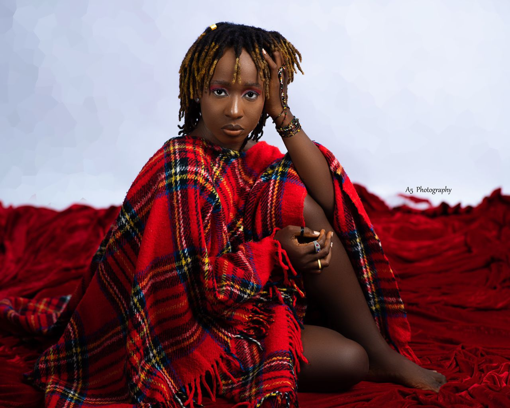
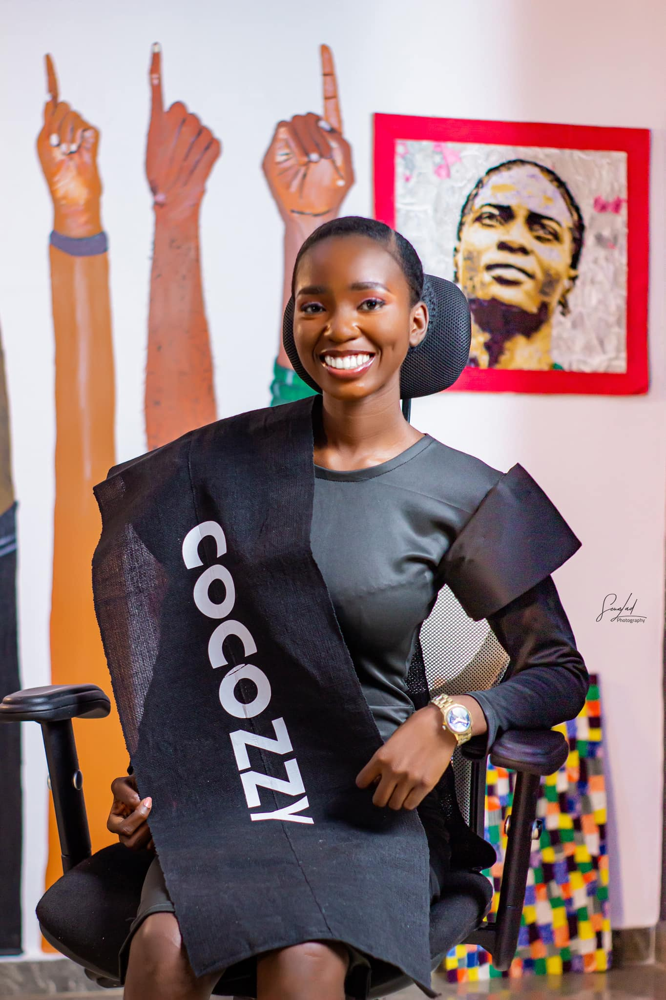

Women Making Waves: Building Dreams and Businesses in Nigeria
March is a month to celebrate the incredible achievements of women around the world. This year, we turn our spotlight to three inspiring Nigerian women in Akure who are making their mark in the creative sphere. From Cindy Uk-Ibiam, the creative nomad who is passionate about building the Akure creative community, to Odunola Victor-Ayegba, the IT whiz who is empowering teenagers through business education, and Ruth Alao (Cocozzy), the textile artist who is keeping African traditions alive with a modern twist, these women embody the power, innovation, and resilience that define women today. As we look back to International Women's Day and celebrate Women's History Month, their stories serve as a reminder of the immense contributions women make to society and the boundless potential that exists when we break down barriers, inspire inclusion and pursue our passions.
Cindy Uk-Ibiam, Creative Nomad
Cindy Uk-Ibiam isn't your typical 9-to-5er. This Akure-based creative nomad traded in the office life for a full-time pursuit of her artistic passions over two years ago. Her journey began with a leap of faith – competing in the Face of Beauty and Bride pageant in May 2022, where she placed in the top 5. This experience ignited a spark, leading her to the stage in three consecutive Akure plays, including a leading role as Mrs. Pilkings in directed by Ayokunle Aji "Death and the King's Horseman" safe (Ajii).
Cindy's talents extend beyond the stage. She has seamlessly transitioned into film, starring in short and feature films across Akure and Lagos. Alongside acting, she actively contributes behind the scenes on the film crew, recently taking on the roles of Set Designer for "Ile Ayo the Musical" (streaming on Prime Video) and Production Manager for "How To Get Over You" (premiering April 7th at Akure's Filmhouse Cinemas). Judging by her list of works, one can tell that Cindy is very passionate about the Akure Creative Community, Film especially.
A: I honestly can’t say a whole lot about the entertainment industry because I’m really only on the outside looking in at this point but I'm aware of the challenges young creatives, regardless of gender, face. The industry is not “safe” for the young and eager and “safe” not in the sense of physical security alone but also as regards mental health and creativity. Like every other industry in Nigeria, “having leg”(a Nigerian term for relying on connections) is a pandemic that has left many people discouraged to pursue their dreams of being a part of the entertainment industry. And one way I hope to help this situation is by creating a platform for people to get the recognition they need by simply being qualified.
A: While I wouldn't necessarily say I have traditional role models, there are many women I admire and follow on social media. These include Adaora "Lumina" Mbelu (a storyteller and creative), Oluchi Harrison (a content creator with a stunning personal style that I absolutely adore), Princess Audu (a modest fashion full time content creator), and Letitia Wright (a Christian Hollywood film star) to mention a few. And as far as inspiration goes, finding these women at one point or the other helped me embrace and become the person I am today. I enjoy seeing them as they exist in their respective spheres of influence. Watching them grow and overcome the obstacles and challenges they face and have faced lets me know that I am not alone no matter how unique I might be.
A: I’d say it’s building my portfolio and credibility as a full time Creative Nomad living in Akure. I started a Creative Community last year called “TheGIG” and as of today that is my biggest project yet as far as building my portfolio goes. We aim to change the face of Akure youth social-networking gatherings one hangout at a time. In February we successfully organised “The Great Dating Roulette” and this March it’s the “Boardgames and Books Hangout” for Nerds and Weebs. Overall we pursue a value-over-profit mindset and a “clean fun” approach.

Odunola is a graduate of Information Technology with a passion for transforming ideas into innovative and profitable solutions at HOA & Company. Armed with a degree in IT, she extends her expertise globally, providing strategic consultation services that span across, Branding, Team Building, Talents Management, Ideas and Scaling. Odunola has impacted over 1,000 teenagers through her work and trained more than 40 women on diversifying their investment portfolios and building wealth through financial literacy. Her passion for teaching shines as she helps individuals gain clarity and direction for their business ventures.
While Odunola's background is in IT, her skill set continues to grow. She's constantly honing her knowledge in corporate finance and human resources, ensuring a well-rounded approach to the ever-changing business landscape. Her achievements haven't gone unnoticed. Odunola was recognized by AYLI with a special award in education and by Foursquare Student Fellowship Students at FUTA as the most innovative student in 2023.
Odunola is the founder of Kids & Teens Business Hub, a non-profit organisation dedicated to fostering the next generation of business leaders. She currently serves as the Principal for NaFFS School of Ideation, overseen by the National Foursquare Fellowship Students. She's a lover of God and she derived fulfilment in fulfilling God's Purpose for her life.
A: Throughout my career, I've been driven by the desire to see people's visions come to life. Entrepreneurship, particularly in the area of creating innovative solutions, allows me to directly contribute to solving real-world problems and making a positive impact.
A: Some of the strategies I have adopted over time to be successful in a male-dominated industry are; Collaboration over competition and a focus on exceptional service have been key to my success. By building strong relationships and prioritising client needs, I've been able to establish myself and thrive in this environment.
A: The future is bright for women in business leadership. There's growing recognition of the value diversity brings to the table. While challenges persist, we're seeing significant strides towards equal opportunities and empowerment for women in leadership roles.
Ruth Alao, also known as Cocozzy, served as a former Vice President of the Student Union at the Federal University of Technology Akure (FUTA). With a background in Industrial Design, Textile Option, she excels as a skilled textile artist, designer, and producer. Her dedication to the artistry of textiles has led her to showcase her creations to notable figures nationwide.
Ruth is the founder of Cocozzy, a renowned textile brand specialising in ASOOKE fabrics and fabric products for cultural and modern use. She's passionate about sustainability and addresses textile waste by creating art from discarded materials. Her creativity and leadership have earned her recognition. Ruth Alao continues to inspire and make an impact within and beyond the realm of textiles.
A: As a female artist, my identity revolves around expressing love and connection through my art. Whether through portraits or fabric products like Ade Ori, I create with the intention of spreading love, often commissioned by clients looking to gift their loved ones. My work reflects the beauty of human emotions and celebrates the power of love in all its forms.
A: I'm currently focused on utilising the ASOOKE fabrics produced by our brand to create a range of products suitable for both cultural and modern contexts. The goal is to showcase the versatility and beauty of African textiles in various applications. I find inspiration in the rich cultural heritage surrounding ASOOKE and the opportunity to blend tradition with modern design aesthetics. Creating products that honour our cultural heritage while appealing to contemporary tastes is a source of great inspiration and fulfilment for me.
A: To create art that not only celebrates our culture but also promotes sustainability and environmental consciousness. By showcasing our cultural heritage through textiles and utilising waste materials to craft inspiring artworks, I hope to contribute to a global movement towards waste reduction and eco-friendly practices. The goal is to see our culture embraced worldwide and to inspire others to adopt sustainable habits through the power of art.